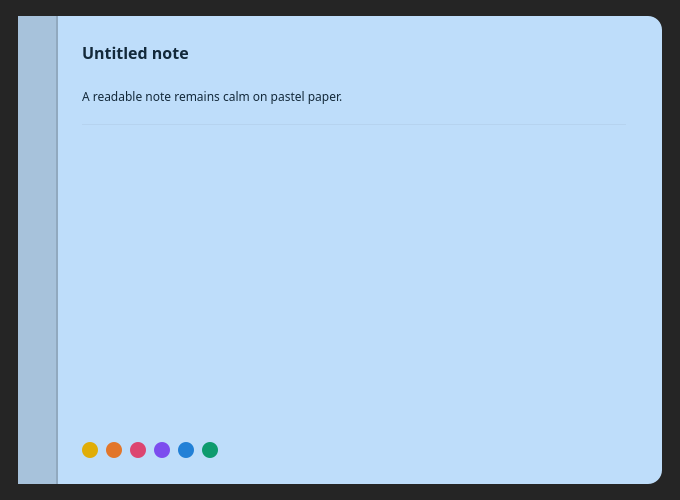
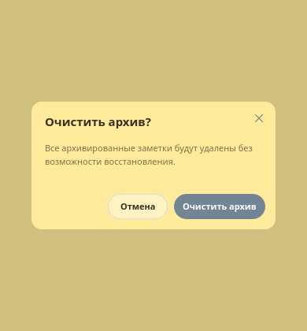
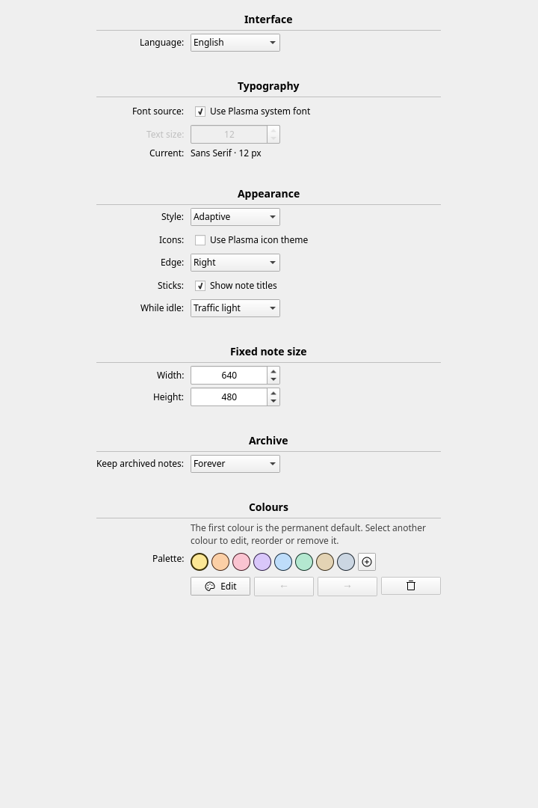
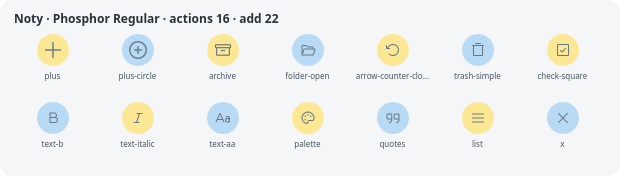

Release the thought
Keep a tiny task, a fragment of a plan, or a note you will need when the next window closes.
✓choose paper
finish the thought
archive when done
KDE Plasma 6 · local-first · MIT
Noty for Plasma rests quietly at the edge of your desktop. Reach it, choose a tab, and write in a full note — without turning your workspace into a wall of windows.
Free software. Your notes remain in your local Plasma configuration.
The edge is the interface
Keep a tiny task, a fragment of a plan, or a note you will need when the next window closes.
A small place for the things you should not lose.
One edge, three useful states
Noty is designed around the empty desktop: it has a minimal resting state, a readable fan, and a note that opens in place.
A tiny colour indicator uses the desktop edge instead of a dock icon or a permanent floating window.
Hovering reveals every active note. Tabs distribute across the available edge and overlap gracefully when the deck grows.
The chosen card opens at its own tab. The other tabs retain their position, order and orientation so switching stays spatially predictable.
Designed against real components
The screenshots below come from the QML test harness. They cover actual components rather than polished mockups.

Pastel paper keeps its identity while typography and interaction affordances can follow the current Plasma theme.
Archiving removes a note from the deck without deleting it. Retention can be permanent or time-limited.
Add colours, reorder them, and remove optional entries. The first paper remains a safe default for affected notes.

Native enough to belong
Choose a complete Noty look, Adaptive integration, or a more Plasma-led appearance. The paper stays colourful and contrast is protected in all three modes.

Settings: language, system font, appearance, edge, fixed note size, archive and palette.
One icon language
Noty ships Phosphor Icons in the Regular weight for every product action. The optional Plasma icon-theme switch is there for experimentation, never as a mixed default.

Start from source
Install the package, then add Noty from Plasma’s widget picker and place it on an edge. The source is intentionally small and inspectable.
$ git clone https://github.com/rodmanvictor/noty-plasma.git
$ cd noty-plasma
$ kpackagetool6 --type Plasma/Applet \
--upgrade plasmoid/packageHonest provenance
Noty for Plasma is an independent KDE Plasma implementation inspired by the interaction idea behind Noty for macOS by Aymen Hamza: notes that live at the edge instead of competing with your workspace.
This project is a separate Qt 6 / QML / C++ implementation for KDE Plasma. It is not the upstream macOS codebase, is not an official release, and is not affiliated with the original author. See the repository NOTICE and MIT licenses for the exact attribution.